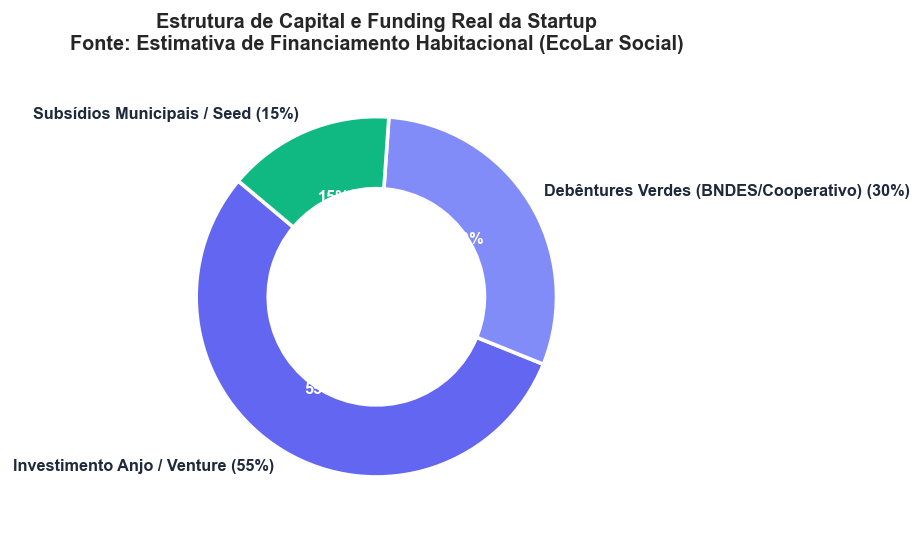
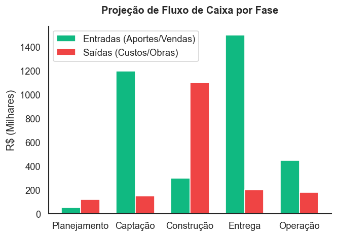
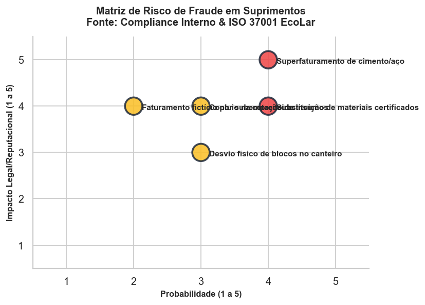
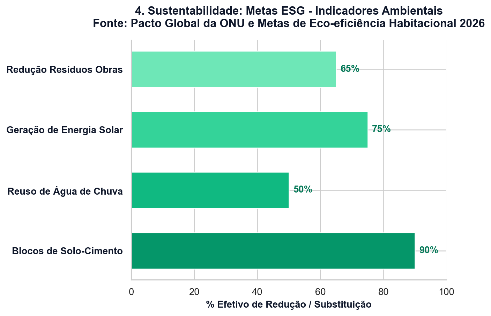
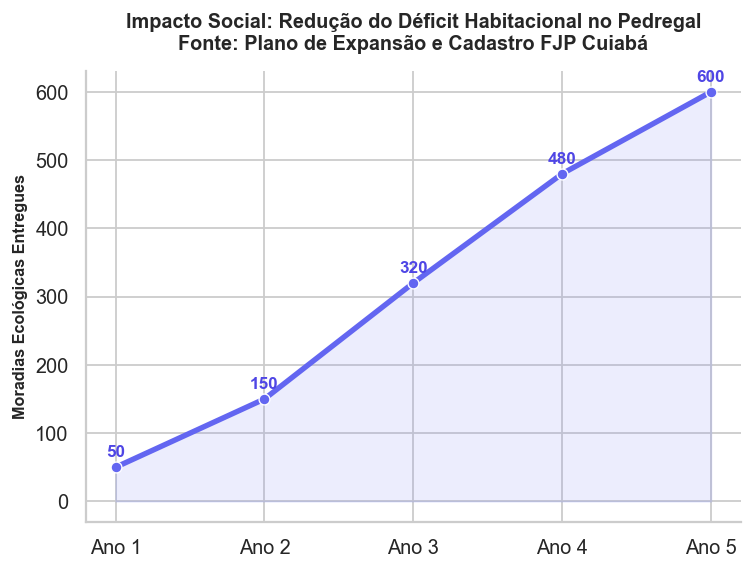

Viabilização habitacional sob a ótica das disciplinas integradas de negócios.
Integrantes: Joanna, Cinthia, Leandro e Guilherme
O déficit habitacional crônico e a precariedade urbana na periferia de Cuiabá, especialmente no bairro Pedregal, impõem severos óbices ao desenvolvimento sustentável local (Silva, 2023). Nesse sentido, as intervenções tradicionais enfrentam gargalos de agilidade operacional e regularização técnica. Com o propósito de dirimir esse cenário, a estruturação de uma **Startup de Impacto Social** surge como o vetor de transformação ideal.
Ao alinhar a eficiência corporativa com a meta de moradia digna, o modelo de startup viabiliza metodologias de construção ágil e captação de fundos específicos de sustentabilidade.
Desse modo, a constituição societária formalizada garante a atração de capital focado no impacto socioambiental direto, transformando moradias ecológicas em soluções economicamente viáveis.
Para viabilizar este empreendimento de moradias populares sustentáveis, a startup será constituída sob a forma societária de Sociedade Limitada (LTDA) (Silva, 2023). Adicionalmente, verifica-se que este formato jurídico atende de maneira técnica a duas demandas institucionais do projeto:
Diante do exposto, ao unir agilidade administrativa societária com governança corporativa, o modelo LTDA possibilita a captação de recursos privados e a escalabilidade da operação territorial de habitação.
O mapeamento dos riscos corporativos do projeto habitacional é fundamental para o estabelecimento de medidas de governança e mitigação ativa (Almeida, 2023). Nesse sentido, a estruturação de uma matriz de severidade permite identificar as fragilidades legais e operacionais:
| Risco Mapeado | Probabilidade | Impacto | Medidas de Prevenção e Mitigação |
|---|---|---|---|
| Irregularidades legais e licenciamento | Média | Alto | Realização de auditoria ambiental prévia e contratação de assessoria jurídica regulatória permanente. |
| Desvio de recursos financeiros | Baixa | Alto | Segregação de funções fiscais e implantação de auditoria externa periódica. |
| Atrasos operacionais em cronograma de obras | Média | Médio | Adoção de metodologias ágeis e homologação de parceiros de engenharia qualificados. |
| Conflitos territoriais com a comunidade local | Média | Alto | Implantação de canal de comunicação transparente e mediação comunitária estruturada. |
Os pilares sustentáveis do empreendimento são mensurados por meio de indicadores quantitativos (Barbosa; Souza, 2022). De forma complementar, a integração dos Objetivos de Desenvolvimento Sustentável (ODS) da Organização das Nações Unidas (ONU) e dos indicadores de governança ambiental, social e corporativa (ESG) norteia as metas do projeto:





Utilização de energia solar fotovoltaica e tijolos ecológicos modulares. Ademais, monitora-se a redução na emissão de carbono por bloco produzido.
Redução da vulnerabilidade habitacional por meio da entrega de moradias seguras no bairro Pedregal. Adicionalmente, estimula-se a geração de empregos na construção civil local.
Transparência corporativa, com medição da satisfação dos moradores via *net promoter score* (escore de promotores de rede). Paralelamente, adota-se a auditoria de contratos em tempo real.
A estrutura de capital define a composição das fontes de financiamento utilizadas para constituir e operar uma organização, divididas entre recursos próprios e de terceiros (Ferreira, 2023). Desse modo, o modelo foi desenhado sob uma perspectiva híbrida para assegurar a saúde fiscal da startup e viabilizar subsídios cruzados aos mutuários:
Ao alinhar a sustentabilidade fiscal com o benefício social, a composição de recursos foi estruturada inequivocamente em duas fontes principais:
Aportes dos fundadores da startup e fundos de investimentos especializados em negócios sociais de impacto. Sob essa ótica, busca-se o retorno financeiro aliado ao impacto ecológico.
Financiamentos por meio de linhas de fomento habitacional, parcerias privadas com empresas locais e incentivos fiscais municipais. Ademais, essas fontes reduzem a necessidade de endividamento custoso.
O engajamento das partes interessadas ou *stakeholders* (partes interessadas) influencia na mitigação de embargos e disputas no bairro Pedregal (Couto et al., 2021). Nesse sentido, o mapeamento estabelece as seguintes funções institucionais:
A mediação de conflitos comunitários é estruturada em etapas para garantir resoluções extrajudiciais estáveis (Dias, 2022). Em face do exposto, o protocolo de negociação compreende as seguintes ações:
Estrutura de fomento de cunho epistemológico que confere legitimidade científica, jurídica e regulatória aos pilares constitutivos do projeto de habitação de interesse social (ABNT NBR 6023):
Diante do exposto, a integração multidisciplinar viabiliza o desenvolvimento habitacional de interesse social (Silva, 2023). Por conseguinte, a articulação entre segurança societária (LTDA), conformidade jurídica de compliance, indicadores de desenvolvimento sustentável e gestão de riscos territoriais consolida um modelo escalável de moradia popular sustentável.
Integrantes: Joanna, Cinthia, Leandro e Guilherme